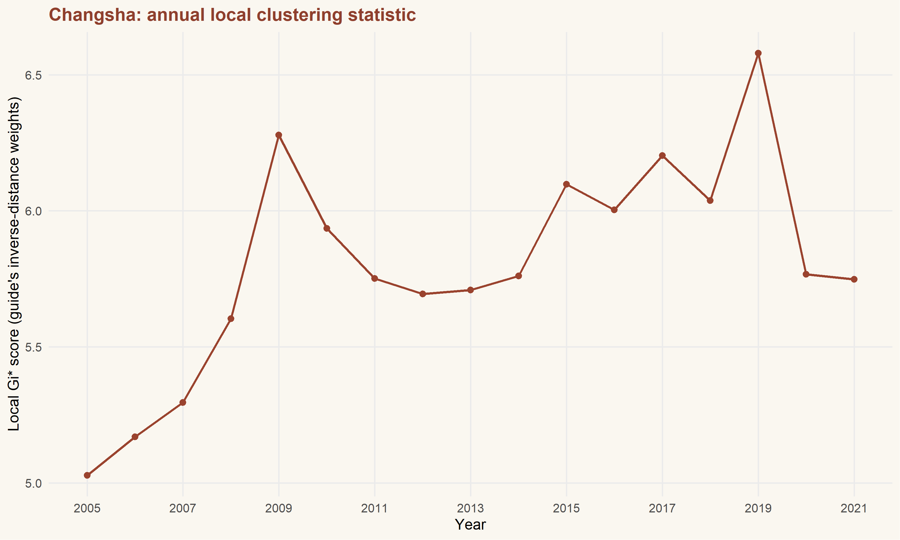
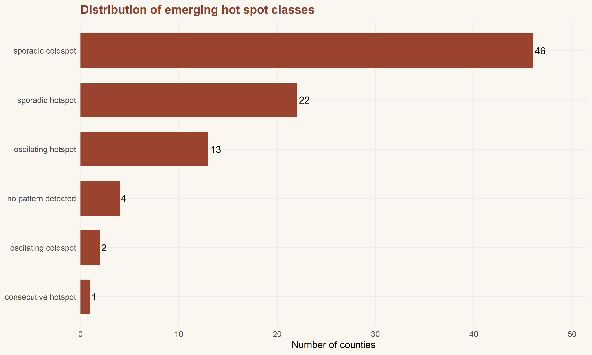
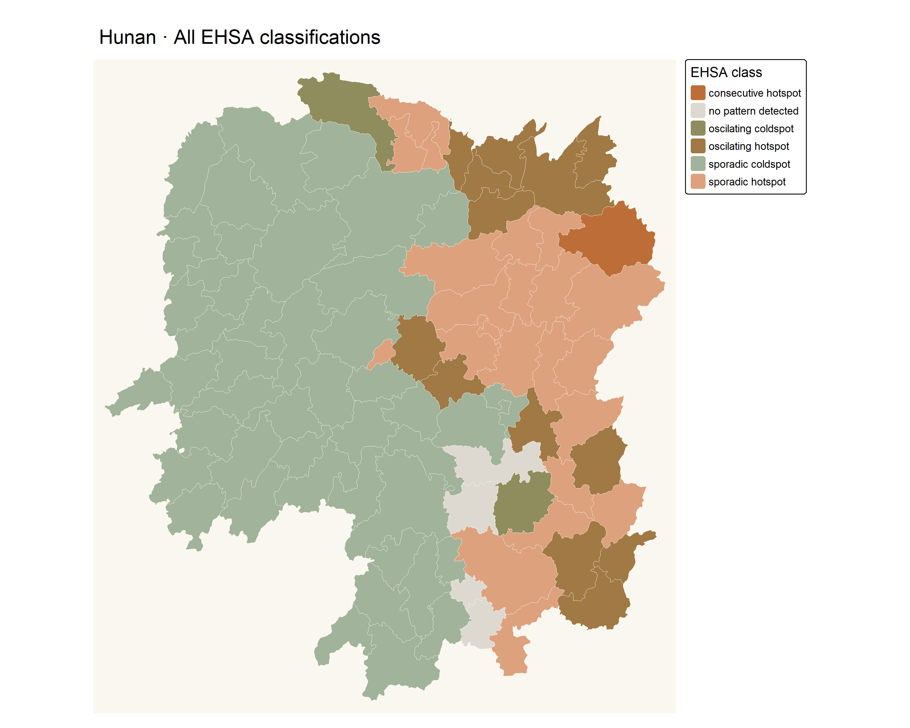
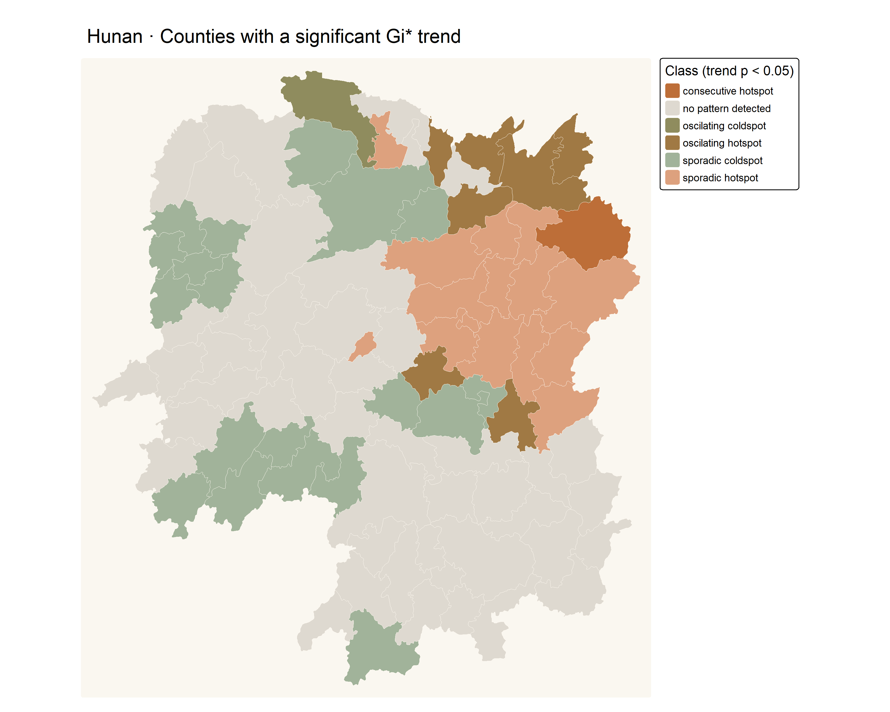

library(sf)
library(sfdep)
library(tmap)
library(dplyr)
library(tidyr)
library(readr)
library(ggplot2)
library(Kendall)
library(plotly)
library(knitr)
spdep::set.coresOption(NULL)
tmap_mode("plot")
options(scipen = 5)
theme_set(theme_minimal(base_size = 12) +
theme(plot.background = element_rect(fill = "#faf7f0", colour = NA),
panel.grid.minor = element_blank(),
plot.title = element_text(colour = "#8f3f2d", face = "bold")))in-class6
Emerging Hot Spot Analysis · Hunan GDP per capita, 2005–2021
1. Question and packages
How has the geography of high and low GDP per capita clustering changed across Hunan? This exercise follows Chapter 11: Emerging Hot Spot Analysis: build a space-time cube, calculate annual local statistics, test their trends, and map emerging hot spot classes. The inputs are the actual Hunan datasets supplied for this coursework.
I use a fixed random seed of 1234 and one worker. The annual calculation uses 499 permutations; the main EHSA calculation retains the chapter’s 99 simulations. A separate 999-simulation run checks how stable the resulting classes are.
2. Import and validate the data
The county polygons are shared with Hands-on Exercise 5A. The time series is Hunan_GDPPC.csv, rather than the single-year Hunan_2012.csv used previously. I transform the polygons to WGS 84 / UTM zone 50N (EPSG:32650), with distances in metres, and order counties before constructing the cube.
hunan <- st_read("handson4/data/geospatial", layer = "Hunan", quiet = TRUE) |>
st_transform(32650) |>
arrange(County)
GDPPC <- read_csv("in-class6/data/aspatial/Hunan_GDPPC.csv",
col_types = cols(Year = col_integer(), County = col_character(),
GDPPC = col_double()))
years <- sort(unique(GDPPC$Year))
stopifnot(nrow(hunan) == 88L, !anyDuplicated(hunan$County),
!anyDuplicated(GDPPC[c("County", "Year")]),
setequal(hunan$County, GDPPC$County), identical(years, 2005:2021),
nrow(GDPPC) == nrow(hunan) * length(years),
!anyNA(GDPPC), all(is.finite(GDPPC$GDPPC)), all(GDPPC$GDPPC > 0),
all(st_is_valid(hunan)), st_crs(hunan)$epsg == 32650)
kable(head(GDPPC), caption = "Actual Hunan GDP per capita observations")| Year | County | GDPPC |
|---|---|---|
| 2005 | Longshan | 3469 |
| 2005 | Changsha | 24612 |
| 2005 | Wangcheng | 14659 |
| 2005 | Ningxiang | 11687 |
| 2005 | Liuyang | 13406 |
| 2005 | Zhuzhou | 8546 |
Validation checks unique county–year keys, matching county names, positive finite values, valid polygons, and a complete annual sequence. No observations are imputed or invented. The supplied boundaries are treated as fixed across years; the CSV does not document an inflation adjustment, so I do not treat the values as inflation-adjusted income.
3. Create the space-time cube
GDPPC_st <- spacetime(GDPPC, hunan, .loc_col = "County", .time_col = "Year")
stopifnot(is_spacetime_cube(GDPPC_st))
is_spacetime_cube(GDPPC_st)[1] TRUEcube_summary <- tibble(Counties = nrow(hunan), Years = length(years),
First_year = min(years), Last_year = max(years),
Observations = nrow(GDPPC))
kable(cube_summary, caption = "Validated, complete space-time cube")| Counties | Years | First_year | Last_year | Observations |
|---|---|---|---|---|
| 88 | 17 | 2005 | 2021 | 1496 |
The cube contains 88 counties × 17 years = 1,496 observations. Each county has one record for every year from 2005 to 2021. is_spacetime_cube() returns TRUE.
4. Spatial neighbours and annual Gi* calculation
The first calculation reproduces the chapter’s Queen-contiguity neighbour lists and inverse-distance weights. Queen neighbours share an edge or a vertex. After attaching neighbours and weights, I preserve their alignment with the polygon row order within every year.
GDPPC_nb <- GDPPC_st |>
activate("geometry") |>
mutate(nb = include_self(st_contiguity(geometry)),
wt = st_inverse_distance(nb, geometry, scale = 1, alpha = 1),
.before = 1) |>
set_nbs("nb") |>
set_wts("wt")
geo_nb <- attr(GDPPC_nb, "geometry")$nb
geo_wt <- attr(GDPPC_nb, "geometry")$wt
stopifnot(all(vapply(geo_wt, function(w) all(is.finite(w)), logical(1))),
all(vapply(seq_along(geo_nb), function(i) {
geo_wt[[i]][match(i, geo_nb[[i]])] == 0
}, logical(1))))
summary(geo_nb)Neighbour list object:
Number of regions: 88
Number of nonzero links: 536
Percentage nonzero weights: 6.921488
Average number of links: 6.090909
Link number distribution:
2 3 4 5 6 7 8 9 10 12
2 2 12 16 24 14 11 4 2 1
2 least connected regions:
41 72 with 2 links
1 most connected region:
64 with 12 links
NoteReading the two analyses correctly
The installed sfdep inverse-distance function uses polygon points on surface and assigns zero weight to zero distances, including the focal county. I retain that behaviour for the chapter’s annual diagnostic. It therefore has a zero diagonal despite using local_gstar_perm().
The later EHSA call receives the original cube and constructs its own row-standardised Queen weights including the focal county, plus a one-year lag. The annual diagnostic and the full EHSA result use different neighbourhood definitions and should be interpreted separately.
set.seed(1234)
gi_stars <- GDPPC_nb |>
group_by(Year) |>
mutate(gi_star = local_gstar_perm(GDPPC, nb, wt, nsim = 499,
alternative = "two.sided", iseed = 1234)) |>
unnest(gi_star) |>
ungroup()
stopifnot(nrow(gi_stars) == nrow(GDPPC), all(is.finite(gi_stars$gi_star)))
kable(gi_stars |> select(County, Year, GDPPC, gi_star, p_sim) |> head(),
digits = 4, caption = "Annual local statistics; unadjusted permutation p-values")| County | Year | GDPPC | gi_star | p_sim |
|---|---|---|---|---|
| Anhua | 2005 | 4411 | -1.1495 | 0.636 |
| Anren | 2005 | 7423 | 1.6667 | 0.124 |
| Anxiang | 2005 | 8184 | 0.3981 | 0.668 |
| Baojing | 2005 | 4612 | -1.4449 | 0.312 |
| Chaling | 2005 | 8040 | 0.5670 | 0.576 |
| Changning | 2005 | 7906 | 0.5501 | 0.484 |
These scores describe clustering relative to the other counties in each year. A change in a clustering score is different from a change in a county’s raw GDPPC. The displayed annual permutation p-values are unadjusted.
5. Changsha’s local clustering trend
Static time series
cbg <- gi_stars |>
filter(County == "Changsha") |>
arrange(Year) |>
select(County, Year, gi_star)
changsha_plot <- ggplot(cbg, aes(Year, gi_star)) +
geom_line(colour = "#9a432e", linewidth = 0.9) +
geom_point(colour = "#9a432e", size = 2) +
scale_x_continuous(breaks = seq(2005, 2021, 2)) +
labs(title = "Changsha: annual local clustering statistic",
x = "Year", y = "Local Gi* score (guide's inverse-distance weights)")
changsha_plot
Interactive time series
Hover over the points to inspect each year. Use the chart toolbar to zoom or reset the view.
ggplotly(changsha_plot, tooltip = c("x", "y")) |>
layout(paper_bgcolor = "#faf7f0", plot_bgcolor = "#faf7f0") |>
config(displaylogo = FALSE, responsive = TRUE)Mann–Kendall test
The null hypothesis is no monotonic trend in the annual score. Positive Kendall’s tau indicates an upward tendency; negative tau indicates a downward tendency. A trend in a positive score can mean strengthening high-value clustering, while an upward trend in a negative score can mean weakening low-value clustering.
changsha_mk <- cbg |>
summarise(mk = list(unclass(Kendall::MannKendall(gi_star)))) |>
unnest_wider(mk)
kable(changsha_mk, digits = 6, caption = "Changsha Mann–Kendall test (sl is the p-value)")| tau | sl | S | D | varS |
|---|---|---|---|---|
| 0.485294 | 0.007417 | 66 | 136 | 589.3333 |
county_mk <- gi_stars |>
arrange(County, Year) |>
group_by(County) |>
summarise(mk = list(unclass(Kendall::MannKendall(gi_star))), .groups = "drop") |>
unnest_wider(mk) |>
mutate(p_bh = p.adjust(sl, method = "BH"))
top_trends <- county_mk |> arrange(sl, desc(abs(tau))) |> slice_head(n = 10)
kable(top_trends, digits = 6, caption = "Ten smallest trend p-values; BH adjustment across 88 counties")| County | tau | sl | S | D | varS | p_bh |
|---|---|---|---|---|---|---|
| Shuangfeng | 0.867647 | 0.000001 | 118 | 136 | 589.3333 | 0.000042 |
| Xiangtan | 0.867647 | 0.000001 | 118 | 136 | 589.3333 | 0.000042 |
| Xiangxiang | 0.867647 | 0.000001 | 118 | 136 | 589.3333 | 0.000042 |
| Chengbu | -0.823529 | 0.000005 | -112 | 136 | 589.3333 | 0.000085 |
| Dongan | -0.823529 | 0.000005 | -112 | 136 | 589.3333 | 0.000085 |
| Wugang | -0.808824 | 0.000007 | -110 | 136 | 589.3333 | 0.000104 |
| Huayuan | -0.794118 | 0.000010 | -108 | 136 | 589.3333 | 0.000115 |
| Shaoshan | 0.794118 | 0.000010 | 108 | 136 | 589.3333 | 0.000115 |
| Liuyang | 0.779412 | 0.000015 | 106 | 136 | 589.3333 | 0.000149 |
| Zhuzhou | 0.764706 | 0.000022 | 104 | 136 | 589.3333 | 0.000149 |
For Changsha, tau = 0.485 and p = 0.00742. At the unadjusted 5% level, this supports a monotonic trend; the estimated direction is upward.
Across all counties, 42 annual-score trends have raw p < 0.05, and 38 remain below 0.05 after Benjamini–Hochberg adjustment across the 88 county tests. The top-ten table ranks by p-value, then decreasing absolute tau. These are trend rankings rather than EHSA classifications.
6. Emerging hot spot analysis
set.seed(1234)
ehsa <- emerging_hotspot_analysis(x = GDPPC_st, .var = "GDPPC",
k = 1, nsim = 99, threshold = 0.01, include_gi = TRUE)
# Record the cube's geometry order when attaching per-bin statistics.
bin_results <- bind_cols(
tibble(County = rep(attr(GDPPC_st, "geometry")$County, times = length(years)),
Year = rep(years, each = nrow(hunan))),
as_tibble(attr(ehsa, "gi_star")))
bin_summary <- bin_results |>
group_by(County) |>
summarise(mk_tau = as.numeric(MannKendall(gi_star)$tau),
mk_p = as.numeric(MannKendall(gi_star)$sl),
hot_years = sum(gi_star > 0 & p_sim <= 0.01),
cold_years = sum(gi_star < 0 & p_sim <= 0.01), .groups = "drop")
ehsa <- as_tibble(ehsa) |>
left_join(bin_summary, by = c("location" = "County")) |>
mutate(p_bh = p.adjust(p_value, method = "BH"))
stopifnot(nrow(ehsa) == 88L, !anyNA(ehsa),
all(abs(ehsa$tau - ehsa$mk_tau) < 1e-7),
all(abs(ehsa$p_value - ehsa$mk_p) < 1e-7))
class_counts <- ehsa |> count(classification, sort = TRUE)
kable(class_counts, caption = "EHSA classes: 99 simulations, k = 1, threshold = 0.01")| classification | n |
|---|---|
| sporadic coldspot | 46 |
| sporadic hotspot | 22 |
| oscilating hotspot | 13 |
| no pattern detected | 4 |
| oscilating coldspot | 2 |
| consecutive hotspot | 1 |
The main analysis uses k = 1, so neighbourhoods incorporate the current year and the preceding year. The earliest year has no preceding observation. I make the package’s default classification threshold of 0.01 explicit and retain the underlying bin statistics for inspection. I also verify that each reported county trend matches a Mann–Kendall test of its own ordered bin scores.
NoteSignificance and simulation resolution
In the installed sfdep implementation, classification uses unadjusted p_sim and Mann–Kendall p-values. It does not automatically apply the FDR correction mentioned in the chapter overview. Its bin p_sim is the smaller simulated tail probability. With 99 simulations the smallest attainable value is 0.01, exactly the classification threshold, making a simulation sensitivity check useful.
The returned p_value is the county’s trend-test p-value, not a bin-level hot spot p-value. BH values reported here adjust county trend tests only. This classroom implementation should not be described as identical to ArcGIS EHSA.
The sfdep reference documents the defaults and time-lag neighbourhoods. The behaviour above was additionally checked against the installed package functions.
Distribution of classes
ggplot(class_counts, aes(n, reorder(classification, n))) +
geom_col(fill = "#9a432e", width = 0.7) +
geom_text(aes(label = n), hjust = -0.2) +
scale_x_continuous(expand = expansion(mult = c(0, 0.12))) +
labs(title = "Distribution of emerging hot spot classes",
x = "Number of counties", y = NULL)
The most frequent class in this run is sporadic coldspot, with 46 counties. Counts reflect this dataset, seed, neighbourhood, threshold, and package version.
Full classification map
hunan_ehsa <- hunan |> left_join(ehsa, by = c("County" = "location"))
classes <- sort(unique(ehsa$classification))
class_colours <- c("consecutive coldspot" = "#889d86",
"consecutive hotspot" = "#bd6e38", "diminishing coldspot" = "#b3bb9c",
"diminishing hotspot" = "#c99177", "historical coldspot" = "#d6dbc8",
"historical hotspot" = "#e1c3b0", "intensifying coldspot" = "#3f5f4b",
"intensifying hotspot" = "#742d24", "new coldspot" = "#567a63",
"new hotspot" = "#b84328", "no pattern detected" = "#ded9d0",
"oscilating coldspot" = "#8f8c5e", "oscilating hotspot" = "#a07944",
"persistent coldspot" = "#607560", "persistent hotspot" = "#934e36",
"sporadic coldspot" = "#a1b39a", "sporadic hotspot" = "#dda17e")
hunan_ehsa$classification <- factor(hunan_ehsa$classification, levels = classes)
ehsa_map <- tm_shape(hunan_ehsa) +
tm_polygons(fill = "classification", col = "#fffaf2", lwd = 0.5,
fill.scale = tm_scale_categorical(values = unname(class_colours[classes]),
levels = classes, levels.drop = FALSE),
fill.legend = tm_legend(title = "EHSA class", position = tm_pos_out())) +
tm_layout(bg.color = "#faf7f0", frame = FALSE) +
tm_title("Hunan · All EHSA classifications")
ehsa_map
Map filtered by significant trends
ehsa_sig <- hunan_ehsa |> filter(p_value < 0.05)
tm_shape(hunan_ehsa) +
tm_polygons(fill = "#ded9d0", col = "#fffaf2", lwd = 0.5) +
tm_shape(ehsa_sig) +
tm_polygons(fill = "classification", col = "#fffaf2", lwd = 0.5,
fill.scale = tm_scale_categorical(values = unname(class_colours[classes]),
levels = classes, levels.drop = FALSE),
fill.legend = tm_legend(title = "Class (trend p < 0.05)", position = tm_pos_out())) +
tm_layout(bg.color = "#faf7f0", frame = FALSE) +
tm_title("Hunan · Counties with a significant Gi* trend")
This filtered map colours 44 counties. Grey counties fail the displayed trend filter; some may still have a persistent hot or cold spot classification in the full map. A persistent cluster can have no significant monotonic trend. 36 counties pass a separate BH-adjusted 5% trend criterion.
7. Interpreting the classes
The ArcGIS classification reference provides the conceptual taxonomy below. The maps retain the labels actually returned by sfdep; its detailed classification rules can differ from ArcGIS.
| Family | Conceptual meaning |
|---|---|
| New | Significant clustering appears at the final time step. |
| Consecutive | Clustering occupies an uninterrupted final run. |
| Intensifying | Frequent clustering grows stronger with a significant trend. |
| Persistent | Frequent clustering has no significant intensity trend. |
| Diminishing | Frequent clustering weakens with a significant trend. |
| Sporadic | Intermittent clustering occurs on one side of the distribution. |
| Oscillating | The history contains both hot and cold clustering. |
| Historical | Frequent past clustering is absent in the latest period. |
| No pattern detected | The classification rules identify no named pattern. |
Here “hot” refers to a neighbourhood of relatively high GDPPC, and “cold” to relatively low GDPPC. Neither label measures GDP growth directly. These county-level patterns do not establish a causal explanation for regional inequality or describe every household within a county.
8. Simulation sensitivity and limitations
set.seed(1234)
ehsa_999 <- emerging_hotspot_analysis(x = GDPPC_st, .var = "GDPPC",
k = 1, nsim = 999, threshold = 0.01)
sensitivity <- ehsa |>
select(location, class_99 = classification) |>
left_join(as_tibble(ehsa_999) |>
select(location, class_999 = classification), by = "location") |>
mutate(changed = class_99 != class_999)
stopifnot(nrow(sensitivity) == 88L, !anyNA(sensitivity),
all(abs(ehsa$tau - ehsa_999$tau[match(ehsa$location, ehsa_999$location)]) < 1e-7))
kable(sensitivity |> count(class_99, class_999, changed, sort = TRUE),
caption = "Class stability when increasing simulations from 99 to 999")| class_99 | class_999 | changed | n |
|---|---|---|---|
| sporadic coldspot | sporadic coldspot | FALSE | 46 |
| sporadic hotspot | sporadic hotspot | FALSE | 21 |
| oscilating hotspot | oscilating hotspot | FALSE | 12 |
| no pattern detected | oscilating coldspot | TRUE | 4 |
| oscilating coldspot | oscilating coldspot | FALSE | 2 |
| consecutive hotspot | sporadic hotspot | TRUE | 1 |
| oscilating hotspot | sporadic hotspot | TRUE | 1 |
| sporadic hotspot | consecutive hotspot | TRUE | 1 |
Increasing simulations from 99 to 999 changes 7 of 88 classifications; 81 remain unchanged. The observed scores and their trend statistics remain the same because only the simulated bin-level evidence changes. The main maps continue to show the chapter’s 99-simulation run.
Neighbour definitions, threshold choices, multiple testing and the treatment of temporal dependence all affect interpretation. The standard Mann–Kendall test used here does not correct for serial correlation. With only 17 annual observations, these results are an exploratory description of the supplied series.
9. Results and reproduction
dir.create("in-class6/results", recursive = TRUE, showWarnings = FALSE)
write_csv(gi_stars |> select(-nb, -wt), "in-class6/results/annual-gi.csv")
write_csv(county_mk, "in-class6/results/annual-mann-kendall.csv")
write_csv(ehsa, "in-class6/results/ehsa-99.csv")
write_csv(bin_results, "in-class6/results/ehsa-bin-statistics.csv")
write_csv(sensitivity, "in-class6/results/class-sensitivity.csv")
package_versions <- tibble(package = c("R", "sf", "sfdep", "spdep", "tmap",
"Kendall", "plotly", "dplyr"), version = c(as.character(getRversion()),
vapply(c("sf", "sfdep", "spdep", "tmap", "Kendall", "plotly", "dplyr"),
function(p) as.character(packageVersion(p)), character(1))))
write_csv(package_versions, "in-class6/results/package-versions.csv")
kable(package_versions, caption = "Reproduction environment")| package | version |
|---|---|
| R | 4.5.3 |
| sf | 1.1.3 |
| sfdep | 0.2.5 |
| spdep | 1.4.2 |
| tmap | 4.4.1 |
| Kendall | 2.2.2 |
| plotly | 4.12.1 |
| dplyr | 1.2.1 |
Run source("in-class6/R/analysis.R") from the project root, then render this page. Package versions and the seed are recorded so the analysis can be checked independently.